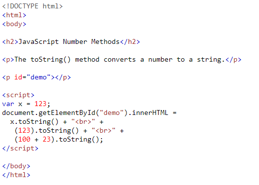
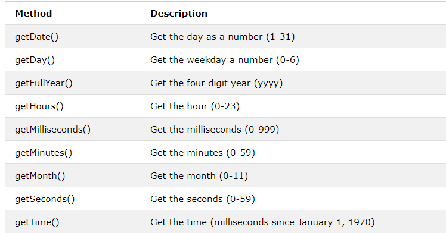
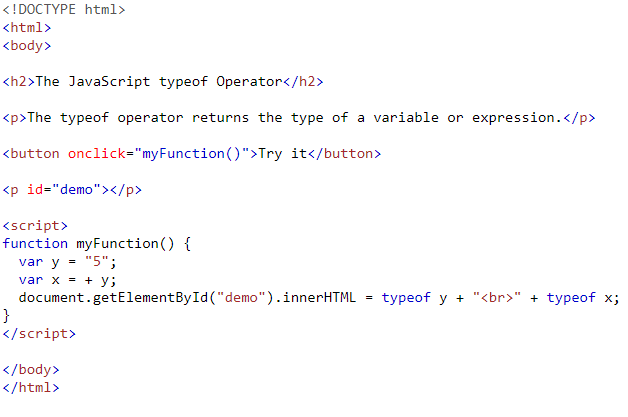

TİP DÖNÜŞÜMLERİ
Javascript dinamik bir dildir. Bunun anlamı, bir değişken tanımlanırken, veri tipini belirtme zorunluluğunun olmamasıdır.
Buda bir değişkenin veri tipinin kodun çalışması esnasında ihtiyaç olunan veri tipe otomatik dönüştürülmesi anlamına gelir.
sayi.toString() :
Sayıyı String ifadeye çevirir (Number to String).
Örnek

JavaScript Number Methods
The toString() method converts a number to a string.123
123
123
Strings için gibi Boolean dönüştürme
String(false) // returns "false"
String(true) // returns "true"
Boole yöntem toString()aynı işi yapar.
false.toString() // returns "false"
true.toString() // returns "true"
Stringler için Tarihlerini dönüştürme
String(Date()) // returns "Thu Jul 17 2014 15:38:19 GMT+0200 (W. Europe Daylight Time)" Örnek
Öncelikle kodumuzun ekran görüntüsünü ekliyoruz!

The typeof operator returns the type of a variable or expression.
parseInt(string) :
String olarak gönderilen metinsel değeri sayıya çevirir. String ifadesinde ondalık sayi var ise onu siler (String to Number).
parseFloat(string): :
String olarak gönderilen metinsel değeri sayayı çevirir. Ondalık ifade aynen döndürülür (String to Number).
array.toString() :
Array olarak tanımlanan bir değişkeni string ifadeye çevirir (Array to String).
document.getElementById("demo").innerHTML = myVar;
// if myVar = {name:"Fjohn"} // toString converts to "[object Object]"
// if myVar = [1,2,3,4] // toString converts to "1,2,3,4"
// if myVar = new Date() // toString converts to "Fri Jul 18 2014 09:08:55 GMT+0200"
string.split(karakter) :
String olarak tanımlanmış bir ifade belirtilen karakterin içindeki geçtiği yerlerden array ifadeye çevirir (String to Array).
json.stringify() :
Object olarak tanımlanan karakter veya sayısal nesneyi string ifadeye çevirir (JSON to String).
json.parse(string):
String olarak tanımlanan metinsel JSON değerleri JSON nesnesine çevirir (String to JSON veya parse JSON).